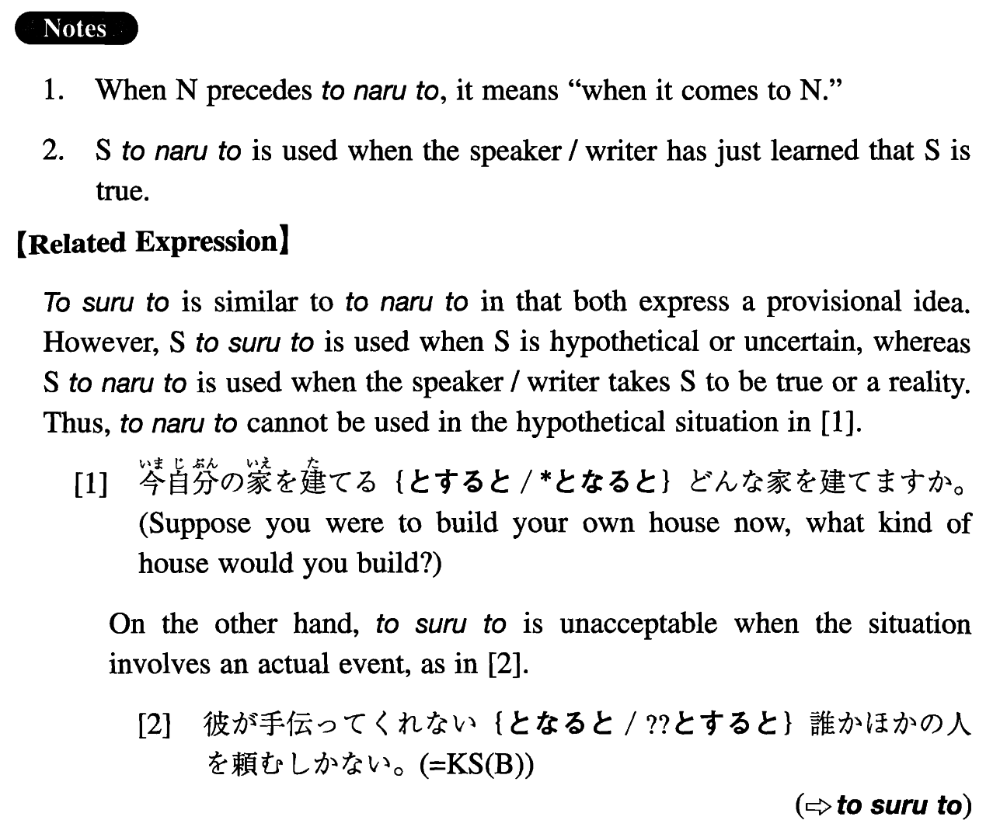

←
DoJG
→
となると
(I. 512)
Example sentences
(ksa).
私は機械のこと
となると
何も分からない。
When it comes to mechanical things, I don't understand anything.
(ksb).
彼が手伝ってくれない
となると
誰かほかの人を頼むしかない。
If it's true that he is not going to help us, we'll have no alternative but to ask someone else.
(a).
勉はギャンブル
となると
人が変わってしまう。
When it comes to gambling, Tsutomu becomes another person.
(b).
日本語が出来る科学者
となると
数がかなり限られてくる。
When it comes to scientists who can speak Japanese, the number is quite limited.
(c).
何でも仕事
となると
楽なものはない。
Nothing is easy (literally: There is nothing easy) when it comes to work.
(d).
彼が参加できない
となると
このプロジェクトは考え直さなければならない。
If it turns out that he cannot participate (in this project), we'll have to reconsider it.
(e).
秘密が漏れた
となると
この計画は変更しなければならない。
If it is true that the secret (of this plan) has leaked, we must change it.
(f).
彼が新しい社長になる
となると
経営方針がかなり変わるだろう。
If he turns out to be the new president, the management policy will probably be considerably different.
(g).
この仕事は簡単そうに見えるが、一人でする
となると
結構大変だ。
This job looks easy, but if (it is the case that) you do it by yourself, it will be quite tough.
Formation
(i)
Noun
となると
映画
となると
When it comes to movies
(ii)
Sinformal
となると
Exception: XがNounとなると
彼が来る
となると
If it is true that he is coming
彼女が病気
となると
If it is the case that she is ill
